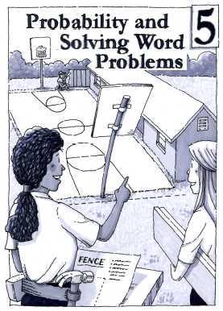

Chapter 5
Probability and Solving Word Problems
Navigation is reserved for this future chapter. Add the chapter source later and these links can become active without changing the textbook structure.
Lessons
- 5 OpeningChapter 5 OpeningFuture unit
- 5.1.1Part-Whole RelationshipsFuture unit
- 5.1.2Finding and Using PercentagesFuture unit
- 5.2.1Probability GamesFuture unit
- 5.2.2Computer Simulations of ProbabilityFuture unit
- 5.2.3Compound Independent EventsFuture unit
- 5.2.4Probability TablesFuture unit
- 5.2.5Probability TreesFuture unit
- 5.2.6Compound EventsFuture unit
- 5.3.1Describing Relationships Between QuantitiesFuture unit
- 5.3.2Solving A Word ProblemFuture unit
- 5.3.3Strategies for Using the 5-D ProcessFuture unit
- 5.3.4Using Variables to Represent Quantities in Word ProblemsFuture unit
- 5.3.5More Word Problem SolvingFuture unit
- 5 ClosureChapter 5 ClosureFuture unit